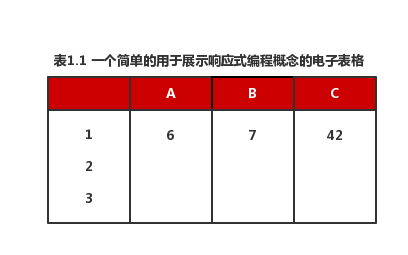
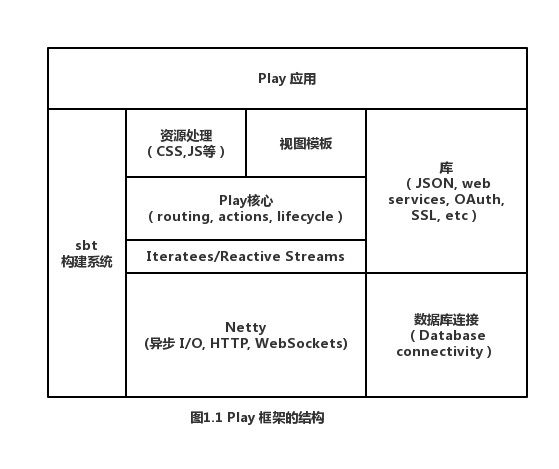

<译> 响应式 Web 应用（二）
原书
1.1.3 响应式编程
响应式编程是一种基于数据流以及传播数据变化的编程范例。例如，考虑表 1.1 中所表示的电子表格。

单元格 C1 以如下的方式来定义：
C1 = A1 * B1
如果我们在电子表格中运行上述例子，一旦 A1 或者 B1 的值发生改变，那么 C1 的结果将相应地作出改变。因此电子表格背后的编程语言允许我们定义数据之间的关系，那些数据将会在电子表格中传播变化。
为了实现一个实时的电子表格应用程序，比如 Google Drive 中的电子表格，我们将会利用一些底层的概念（诸如事件）去进行构建：当用户改变单元格 A1 的值时，会触发一个事件。然后所有与 A1 有关的单元格，比如包含我们表达式的单元格 C1就会对该事件做出响应，该单元格将会重新计算自身的值然后将新的值显示出来。这个过程将完全对用户隐藏，因为用户只关心单元格中值之间的关系。
在 Web 应用程序开发方面，这种技术越来越多地用于前端应用程序的开发。比如 KnockoutJS、AngularJS、Meteor 以及 React.js 等工具都使用了这种模式。开发者不需要关心在特定 DOM 元素上声明的监听器的细节，他们只需要描述数据的变化是如何通过用户界面进行传播的就可以了。采用这种模式使得如何去实现响应式用户界面变得简单化了。我们将在第8章中探讨响应式用户界面。
在服务端也能找到类似的抽象，其中事件起着关键性的作用。比如「响应式流」，她旨在为 JVM 上的异步流处理提供一个标准接口。关于这种新的方式我们将会在第9章详细讨论。
1.1.4 响应式技术的出现
这些年来出现了许多技术和框架，她们都有一些共同点，根据这些共同点，我们可以将其归为响应式技术。但是开发响应式应用并不仅仅是简单地使用响应式技术，这点将会在后面介绍。但是所采用的技术必须满足许多先决条件用以支持响应式的行为，尤其是异步和事件驱动代码执行的能力。
微软的 Reactive Extensions （Rx; https://rx.codeplex.com/）是一个用于编写基于异步以及事件驱动程序的类库。你可以在 .NET 平台以及其他平台（例如 JavaScript）上使用它。在 Node.js（http://nodejs.org）上使用 JavaScript 去构建异步的、基于事件驱动的应用程序现已非常流行。同样，在 JVM 上也有大量的类库支持异步以及事件驱动，比如 Apache MINA （https:// mina.apache.org） 以及 Netty（http://netty.io）。
这些底层技术都提供了构建异步和事件驱动应用程序的基本工具，但是要使一个 Web 应用达到一种成熟完备的状态还需要做很多工作。一个成熟的应用程序必须要能够兼顾许多方面，比如代码组织、视图模板、客户端资源（例如样式表和 JavaScript 文件）的引入和组织。还有数据库的连接以及系统的安全性等。当下有许多所谓的全栈式 Web 应用框架，其中还有少部分采用了响应式技术，但是只有极少部分拥抱了响应式技术的原理和核心，她们通过采用响应式技术来从根本上去构建 Web 框架。
全栈式框架关注一个应用程序在构建以及部署过程中所涉及到的所有层面：客户端UI技术（或集成方式），服务器端业务逻辑，身份验证，数据库访问集成以及各种通用模块的类库（如远程 Web 服务调用）。在响应式应用程序中，所有这些层都必须遵循相同的异步调用和错误恢复的原则。
Play 框架是迄今为止 JVM 上唯一的一个全栈响应式 Web 应用框架。其他诸如 Lift （http://liftweb .net）的全栈式框架为 web 应用程序的开发提供了一个很好的选择。但是她们没有将异步，故障恢复能力和可伸缩性作为主要的目标来设计。
Play 是基于 Netty 来构建的，并通过使用「响应式流」所提供的异步流处理来支持其响应式行为（如图 1.1）。

Play 通过使用 sbt 构建工具来处理 web 应用程序开发的典型问题，例如客户端资源处理、项目的编译和打包。并且 sbt 还提供了许多有用的类库来解决诸如 JSON 处理和 Web 服务访问之类的常见问题。另外她还提供了许多插件来实现对数据库的访问。在本书的剩余部分中，你将学习到如何利用 Play 的高效性来构建响应式 web 应用。
现在我们来进一步了解 web 应用程序是如何工作的，以及如何去利用计算机资源来理解为什么响应式 web 应用程序的异步、事件驱动的行为是必要的。